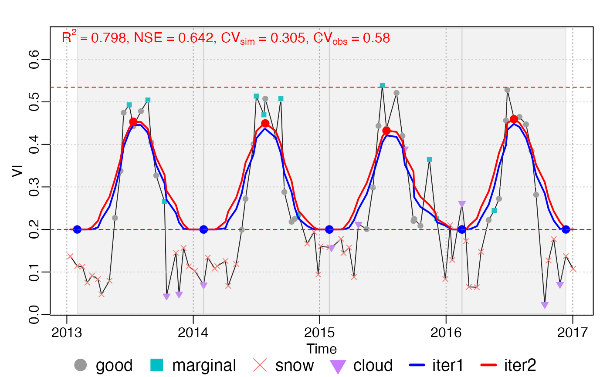
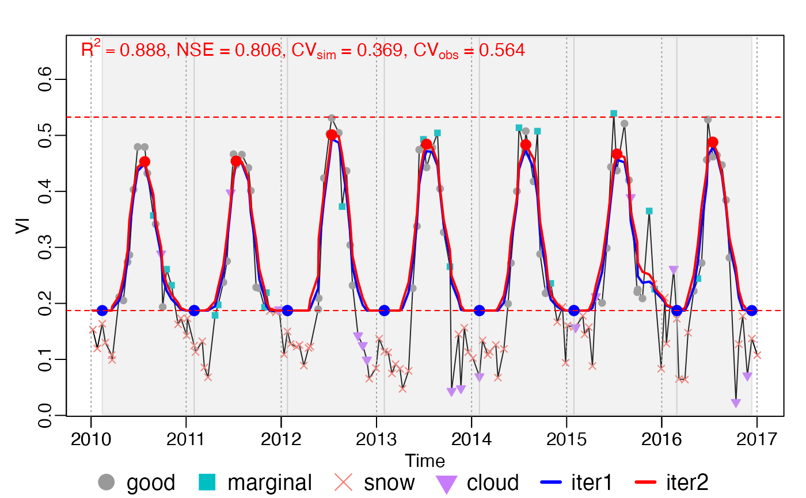

Divide growing seasons according to rough fitting (rFUN) result .
For season, rough fitting is applied for whole.
For season_mov rough fitting is applied in every year, during which
maxExtendMonth is extended.
season(
INPUT,
rFUN,
wFUN,
iters = 2,
wmin = 0.1,
lambda,
nf = 3,
frame = floor(INPUT$nptperyear/5) * 2 + 1,
minpeakdistance = NULL,
ypeak_min = 0.1,
r_max = 0.2,
r_min = 0.05,
rtrough_max = 0.6,
MaxPeaksPerYear = 2,
MaxTroughsPerYear = 3,
calendarYear = FALSE,
adj.param = TRUE,
rm.closed = TRUE,
is.continuous = TRUE,
.check_season = TRUE,
verbose = FALSE,
...
)
stat_season(INPUT, d_fit)A list object with the elements of t, y, w,
Tn (optional) and ylu, returned by check_input().
character, the name of rough curve fitting function, can be one of
c("smooth_wSG", "smooth_wWHIT", "smooth_wHANTS"), which are corresponding to
smooth_wSG(), smooth_wWHIT() and smooth_wHANTS().
weights updating function, can be one of .
integer, the number of rough fitting iterations
double, minimum weigth (i.e. weight of snow, ice and cloud).
The smoothing parameter of smooth_wWHIT(). For
season_mov(), if lambda is NULL, init_lambda()
will be used. Generally, it was set as 10000, 15, and 5 for daily, 8-day
and 16-day inputs respectively.
The parameter of smooth_wHANTS(), number of frequencies to be
considered above the zero frequency.
The parameter of smooth_wSG(), moving window size. Suggested by
TIMESAT, default frame = floor(nptperyear/7)*2 + 1.
double, in points (default as
nptperyear/6). The minimum distance of two peaks. If the distance of two
maximum extreme value less than minpeakdistance, only the real maximum
value will be left.
y_peak >= ypeak_min
Similar as r_min, The maximum threshold should
be greater than r_max.
Threshold is defined as the difference of peak value with trough value. There are two threshold (left and right). The minimum threshold should be greater than r_min.
ytrough <= rtrough_max*A, A is the amplitude of y.
This parameter is used to adjust lambda in iterations. If PeaksPerYear > MaxPeaksPerYear, then lambda = lambda*2.
This parameter is used to adjust lambda in iterations. If TroughsPerYear > MaxTroughsPerYear, then lambda = lambda*2.
If true, only one static calendar growing season will be returned.
, .
boolean. Whether check the two closest peaks (or troughs).
boolean. Whether the input is continuous? This parameter is for fluxsite site-year data.
not used (only for debug)
whether to print options_season into console?
ignored.
A data.frame with the columns of t, y, witer... and ziter....
fit: A data.table of Rough fitting result, with the columns of
(t, y, witer1, ..., witerN, ziter1, ..., ziterN).
dt: A data.table of growing season division information, with the columns
of (beg, peak, end, y_beg, y_peak, y_end, len, year,
season, flag).
Before growing season division, INPUT should be added a year in head
and tail first by add_HeadTail.
Finally, use findpeaks() to get local maximum and local minimum values.
Two local minimum define a growing season.
If two local minimum(maximum) are too closed, then only the smaller(biger)
is left.
data("CA_NS6")
d <- CA_NS6
nptperyear <- 23
INPUT <- check_input(d$t, d$y, d$w,
QC_flag = d$QC_flag,
nptperyear = nptperyear, south = FALSE,
maxgap = nptperyear / 4, alpha = 0.02, wmin = 0.2
)
# plot_input(INPUT)
wFUN <- "wTSM"
# all year as a whole
options = list(rFUN = "smooth_wWHIT", wFUN = wFUN, lambda = 10)
brks <- season(INPUT, lambda = 10)
plot_season(INPUT, brks, d)

brks2 = season_input(INPUT, options)
#> iloop = 1: lambda = 10.0, ntrough_PerYear = 0.00, npeak_PerYear = 0.00
#> iloop = 2: lambda = 5.0, ntrough_PerYear = 0.00, npeak_PerYear = 0.00
#> iloop = 3: lambda = 2.5, ntrough_PerYear = 0.00, npeak_PerYear = 0.00
all.equal(brks2, brks)
#> [1] TRUE
c(d_fit, info_peak) %<-% roughFit(INPUT)
#> iloop = 1: lambda = 10.0, ntrough_PerYear = 0.00, npeak_PerYear = 0.00
#> iloop = 2: lambda = 5.0, ntrough_PerYear = 0.00, npeak_PerYear = 0.00
#> iloop = 3: lambda = 2.5, ntrough_PerYear = 0.00, npeak_PerYear = 0.00
d_season = find_season.peaks(d_fit, info_peak)
c(t, ypred) %<-% d_fit[, .(t, ziter2)]
d_season = find_season.default(ypred, t)
all.equal(brks$dt, d_season)
#> [1] TRUE
# opt <- .options$season
# brks$fit - d_fit # function passed test
# curve fitting by year
brks_mov <- season_mov(INPUT,
options = list(
rFUN = "smooth_wWHIT", wFUN = wFUN,
lambda = 10,
r_min = 0.05, ypeak_min = 0.05,
verbose = TRUE
)
)
#> [season_mov] running 1 ...
#> iloop = 1: lambda = 10.0, ntrough_PerYear = 0.00, npeak_PerYear = 0.00
#> iloop = 2: lambda = 5.0, ntrough_PerYear = 0.00, npeak_PerYear = 0.00
#> iloop = 3: lambda = 2.5, ntrough_PerYear = 0.00, npeak_PerYear = 0.00
#> [season_mov] running 2 ...
#> iloop = 1: lambda = 10.0, ntrough_PerYear = 0.00, npeak_PerYear = 0.00
#> iloop = 2: lambda = 5.0, ntrough_PerYear = 0.00, npeak_PerYear = 0.00
#> iloop = 3: lambda = 2.5, ntrough_PerYear = 0.00, npeak_PerYear = 0.00
#> [season_mov] running 3 ...
#> iloop = 1: lambda = 10.0, ntrough_PerYear = 0.00, npeak_PerYear = 0.00
#> iloop = 2: lambda = 5.0, ntrough_PerYear = 0.00, npeak_PerYear = 0.00
#> iloop = 3: lambda = 2.5, ntrough_PerYear = 0.00, npeak_PerYear = 0.00
#> [season_mov] running 4 ...
#> iloop = 1: lambda = 10.0, ntrough_PerYear = 0.00, npeak_PerYear = 0.00
#> iloop = 2: lambda = 5.0, ntrough_PerYear = 0.00, npeak_PerYear = 0.00
#> iloop = 3: lambda = 2.5, ntrough_PerYear = 0.00, npeak_PerYear = 0.00
#> [season_mov] running 5 ...
#> iloop = 1: lambda = 10.0, ntrough_PerYear = 0.00, npeak_PerYear = 0.00
#> iloop = 2: lambda = 5.0, ntrough_PerYear = 0.00, npeak_PerYear = 0.00
#> iloop = 3: lambda = 2.5, ntrough_PerYear = 0.00, npeak_PerYear = 0.00
#> [season_mov] running 6 ...
#> iloop = 1: lambda = 10.0, ntrough_PerYear = 0.00, npeak_PerYear = 0.00
#> iloop = 2: lambda = 5.0, ntrough_PerYear = 0.00, npeak_PerYear = 0.00
#> iloop = 3: lambda = 2.5, ntrough_PerYear = 0.00, npeak_PerYear = 0.00
#> [season_mov] running 7 ...
#> iloop = 1: lambda = 10.0, ntrough_PerYear = 0.00, npeak_PerYear = 0.00
#> iloop = 2: lambda = 5.0, ntrough_PerYear = 0.00, npeak_PerYear = 0.00
#> iloop = 3: lambda = 2.5, ntrough_PerYear = 0.00, npeak_PerYear = 0.00
plot_season(INPUT, brks_mov)

rfit <- brks2rfit(brks_mov)
r <- get_pheno(rfit)